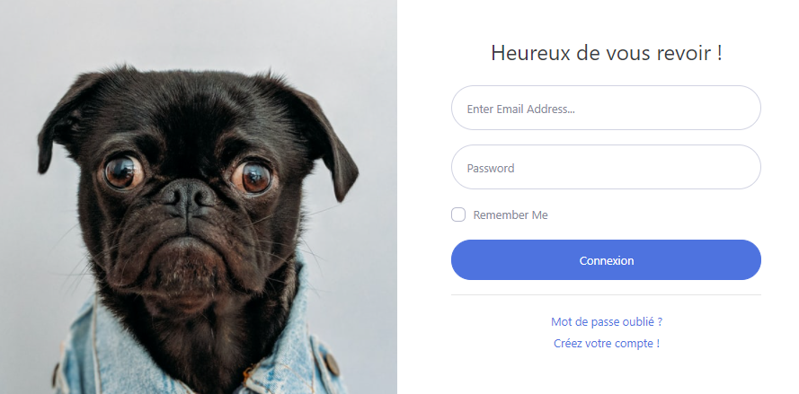
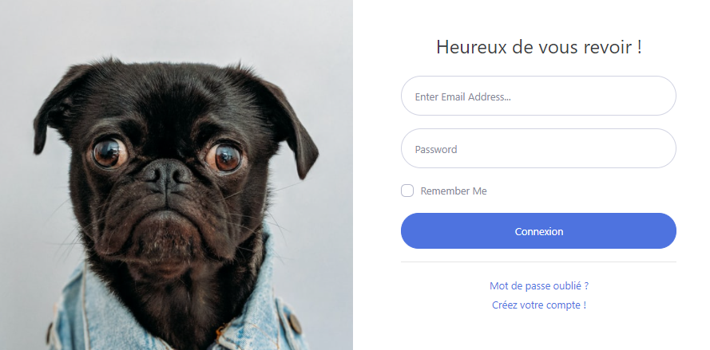

Nom: NADEAU
Prénom: Ludivine
Age: 43 ans
J'ai récemment acquis le titre professionnel de Développeuse Web Web Mobile (RNCP 31114, niveau
bac+2). Ce titre à été obtenu suite à une formation intensive de 805 heures sur 6 mois avec l'école numérique LA MANU de Noyon(60400)
Actuellement, je complète mes connaissances en suivant la formation certifiante .NET (400 heures sur 3 mois, toujours avec l'école numérique LA MANU de Noyon.
Janvier 2021 - Avril 2021
Septembre 2019 - Mars 2020
Septembre 2001 - Juillet 2003
Juillet 1997
Création et integration de sites web responsives , accessibles et répondant aux normes W3C
Développement de sites web, création et gestion de base de données, programmation orientée objet, mise en ligne
 .NET
.NET
système d'exploitation : Windows 10, Linux ubuntu
Workflow : GitHub, WAMP, uWamp, Firefox, Google Chrome,
Filezilla
IDE: Visual Studio, Visual Studio Code, Atom, NetBeans, Sublim Text
CMS: WordPress
Savoir-être : travail en équipe, bon relationnel, capacité
d'écoute et d'analyse, facilité d'adadptation, organisation, rigueur
Lors de ma formation, j'ai developpé des codes en groupe afin de faire des sites web, sur differentes thématiques. Pour l'obtention du titre professionel "Developpeur Web Web Mobile", j'ai réalisé le projet "mamienouche.com", actuellement en cours de finition.

 
